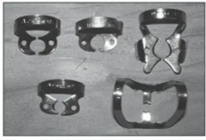

نسخه استخراجشده؛ ترجمه یا تأیید علمی انجام نشده است. وضعیت: captured
در انبار بخش یک کلمپ شمارهی W14A و یک کلمپ شمارهی 14A پیدا کردهای. همکلاسیات میگوید: «هر دو یکیاند، فقط سازنده فرق دارد.» درست میگوید؟
نام سازنده و شماره روی کمان کلمپ حک شده است. هر بخش شماره چیزی میگوید:
سازندهها شمارهگذاری یکسانی ندارند. یک کلمپ ممکن است نزد دو سازنده دو شماره داشته باشد، و یک شماره نزد دو سازنده دو کلمپ متفاوت باشد. پس شماره را نقطهی شروع بدان، نه حکم نهایی: کلمپ باز نشده را کنار دندان بسنج و قانون چهار نقطه را روی خود دندان ببین.
لازم نیست کلمپ همهی سازندهها روی میزت باشد و یکییکی امتحان کنی. اگر معیارهای انتخاب را بدانی، چند کلمپ بیشتر کارها را پوشش میدهد.

کلمپهای مکمل را جدا بستهبندی و استریل کن و فقط وقتی کیت روزانه جواب نداد باز کن: کلمپ 00 برای ثنایای پایین و دندانهای کوچک، کلمپ 1A برای پرمولر با لبهی زیر لثه، کلمپهای 14A و W14A برای مولر نیمهرویشیافته.
نکتهی طلایی: دو کلمپ همهکاره، کلمپ 9 برای قدامی و پرمولر و کلمپ 56 برای بیشتر مولرها، بیشتر ایزولاسیونهای درمان ریشه را پوشش میدهند. بالدار یا بیبال بودن کیت را هم با روش گذاشتنت جور کن: روش بال کلمپ بالدار میخواهد.